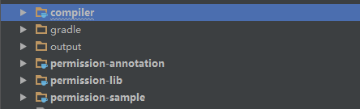
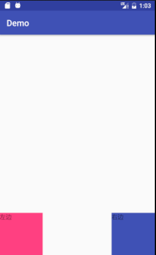

2.2 带你全方位学习Picasso（二）
目次 画像リクエストの並び替え tag() グループリクエスト コールバック、RemoteViewとNotifications 画像の回転と変換 画像キャッシュ キャッシュインジケーター、ログ、統計 Picas...の使用

2.1 带你全方位学习Picasso（一）
はじめに 最初の記事で皆さんにご紹介するのはPicassoです。非常に有名な画像ロード・キャッシュフレームワークです。どの強力なフレームワークも往々にして使い方はとても簡単ですが、その背後にはまだまだ見逃せない多くの機能が…

2.0 Android 插件式开发
本章のはじめに モバイル端末の台頭により、大量の開発者が参入しました（私はただの小さなプログラマーの一人です）。時が経つにつれて、私も当然のようにそこそこの開発者になりましたが、しかし少なからず…

1.4 Android6.0权限管理-开源框架源码分析
1.4 Android6.0権限管理-オープンソースフレームワークのソースコード分析 はじめに Android6.0システムにおいて迎えた最大の特徴は、何と言ってもその権限管理です。なぜなら、著者がチュートリアルを書いているときにはおそらく...

1.3 自定义 ViewGroup
はじめに 前の節ではカスタムViewについて説明しました。次はそれと似ているカスタムViewGroupについて説明します。2つの実装メソッド名はほぼ同じで、例えばそれらのコンストラクタや、同様に必要な…

1.2 自定义 View
はじめに カスタムViewは、その名の通りのものです。Android開発において、多いとも言えず少ないとも言えません。多いと言えないのは、百度/Google頼みの開発者がこれを存分に使っているからであり、少ないとも言えないのは、どんなAPPでも…

1.1 Android 中喜闻乐见的屏幕适配
はじめに Androidオープンソースがもたらしたネタは、何と言っても様々な機種・バージョンのスマートフォンにおける互換性の問題であり、同時にすべてのAndroid開発者が直面しなければならない挑戦でもあり、あるいは様々な…